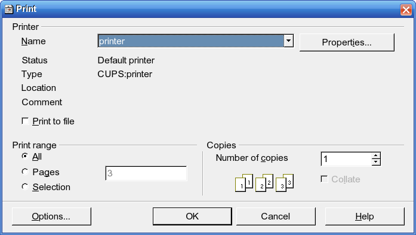
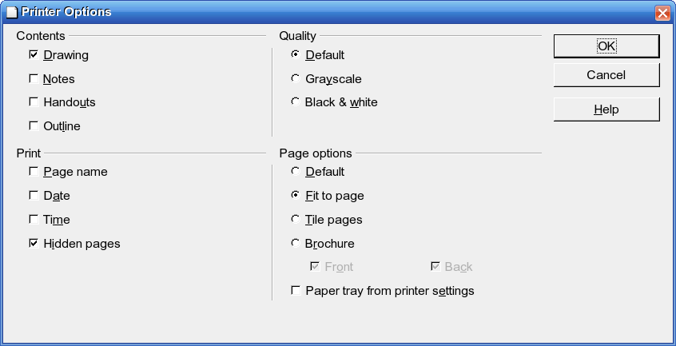

Štampanje prezentacije se radi kao podrška prikazane prezentacije predavaču ili slušaocima.
Štampanje prezentacije pokreće se iz padajućeg menija File / Print

Segment Printer je isti kao i za program OpenOffice.org Writer.
- Segment Print range
- opseg štampe.
- All
- štampa sve slajdove.
- Pages
- odabrane strane (slajdove), ukucate redni broj slajdova koje želite da štampate razdvojene zarezom.
- Selection
- samo obeležene slajdove.
- Segment Copies
- je isti kao u programu OpenOffice.org Writer.
Klikom na dugme Options se otvara prozor sa dodatnim podešavanjima.

- Segment Contents
- sadržaj.
- Drawing
- štampa se slajd.
- Notes
- štampaju se beleške uz slajd.
- Handouts
- štampa Handout pogled prezentacije.
- Outline
- štampa se Outline pogled precentacije.
Segment Print.
- Page name
- štampa ime stranice (u ovom slučaju slajda).
- Date
- štampa trenutni datum.
- Time
- štampa trenutno vreme.
- Hidden pages
- štampa skrivene stranice (slajdove).
Segment Quality — kvalitet štampe.
- Default
- u boji.
- Grayscale
- štampa u nijansama sive.
- Black & white
- crno bela štampa.
Segment Page options — opcije stranice.
- Default
- neće se menjati format bez obzira da li su margine odgovarajuće.
- Fit to page
- vrši se skaliranje slajda ukoliko sadržaj prevazilazi definisane margine.
- Title pages
- ukoliko je sadržaj manji od papira na koji se štampa papir će se “popločati” sa slajdovima.
- Brochure
- štampa prezentaciju kao knjižicu.
- Front
- štampa i na prvu stranu (korice).
- Back
- štampa i na poslednju stranu korica.
- Paper tray from printer settings
- ukoliko otkačite ovu opciju, za način pristupa štampaču, uzeće se njegovo podešavanje, a ne podešavanje OpenOffice.org Impress-a.